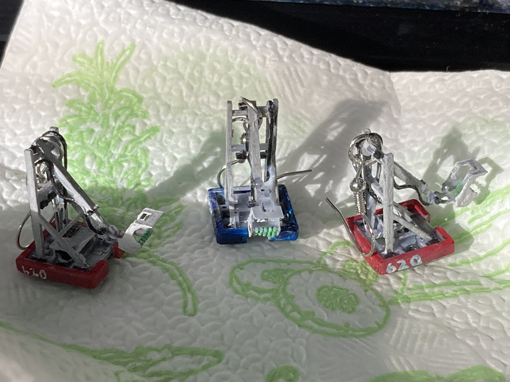
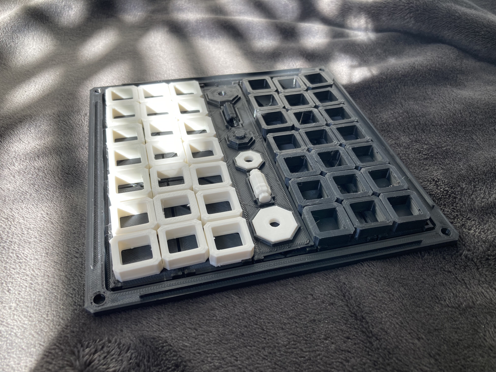

Hi,
I'm Haroon.
Undergrad | Engineering and Design | Sustainable Energy
I go where my passions take me - especially if it means embracing new skills.

Engineering and art have always been constants for me. From designing simple interactive text adventures in Python in middle school or rapidly prototyping a robotic gripper in high school, the principles from both areas have influenced my every passion and undertaking.

As a student of engineering, turning ideas into tangible products is a fundamental skill. That's why I've developed my CAD abilities for use in:

and personal projects.

But like all of my interests, 3D modelling began as a hobby: with Blender.
Music has provided both inspiration and a form of expression throughout my life. I grew up learning classical piano, but found myself drawn towards improvisation and, eventually, composition. I released my first EP "Overture" in early 2021, and my more refined and developed EP "The Ferry" in mid-2023.
I use Ableton Live 10 for production.
Did you know that this website was created and hosted online 100% for free?
Web development was one of my first coding outlets, and it still serves a practical purpose when I need a website like this. Using HTML, CSS and Javascript, as well as GitHub Pages for hosting, there was no need for a website builder. I can even still get those fancy parallax and blurring animations too!